The Expanding Universe of Participation:
Citizen Science in Astronomy and Astrophysics
Dr. Dhritimaan Gogoi Dept of Physics, Pandu College
Long before the professional observatories and space agencies, ordinary people tracked the motions of the Sun, Moon, and stars to build calendars, navigate oceans, and interpret the cosmos. As such, for most of human history, astronomy can be considered a citizen science. Ancient skywatchers in civilizations from Mesopotamia to Mesoamerica recorded celestial events with astonishing precision. Table 1 presents a comprehensive timeline outlining the development of astronomy throughout human civilization. In the 16th Century, meticulous observations of Tycho Brahe, a Danish astronomer, laid the foundation of modern astrophysics. Later in the 18th and 19th centuries, the likes of William Herschel, Charles Messier, Caroline Herschel, William Parsons, and many others contributed to discovery, documentation, and photography using equipment built in their own backyards. In the 20th century, the field became increasingly professionalized, and with the advent of large telescopes, advanced detectors, and complex theoretical frameworks, it shifted the frontier of discovery. Simultaneously, universities and national observatories were established across nations. In the current 21st century, technological transformation spearheaded by Big Data, Artificial Intelligence, and Machine Learning has taken the forefront in analysis and research. Yet open data, distributed computing, and human ingenuity in pattern recognition have sparked a renaissance of public participation. Citizen science in astronomy and astrophysics has evolved into a powerful research paradigm, enabling non-professionals to contribute meaningfully to the study of exoplanets, galaxies, variable stars, supernovae, and even gravitational waves. This article explores the modern landscape of citizen science in astronomy and astrophysics: its historical roots, scientific impact, technological enablers, social implications, challenges, and future directions.
Table 1: Timeline of Astronomy:
Civilization
Approximate Start
Primary Early Achievement
Mesopotamia
c. 3200 BCE
Development of the first writing (cuneiform wedges) used to track Moon phases.
Ancient Egypt
c. 3000 BCE
Alignment of the Pyramids to the North Star and Sirius ("Star of Isis").
India (Vedic)
c. 1500–1200 BCE
The Rig Veda mentions a 360-day year and the Nakshatras (lunar mansions).
Mesoamerica
c. 1100 BCE
Olmec "Long Count" calendar foundations and early alignment of ceremonial sites.
The Historical Continuum:
Astronomy has long bridged the divide between professionals and amateurs. The 1781 discovery of Uranus by William Herschel remains a landmark example of amateur achievement. In the 19th century, coordinated networks of skywatchers cataloged comets and variable stars, a tradition institutionalized by the American Association of Variable Star Observers (AAVSO), which formalized long-term stellar monitoring. Although the 20th century brought increasing professionalization, citizen astronomers continued contributing through comet discoveries, asteroid tracking, and transient observations. The rise of CCD technology, automated surveys, and space telescopes initially widened the technological gap. The digital revolution, however, transformed participation. Public data releases from projects like the Sloan Digital Sky Survey (SDSS) and the growth of high-speed internet enabled volunteers worldwide to analyze vast datasets. Citizen science reemerged as a vital force in modern, data-driven astrophysics.
Citizen Science:
A few of the areas where citizen science has contributed are highlighted in the following paragraphs:
The Zooniverse Model:
One of the most transformative developments in modern citizen science has been the creation of large-scale online platforms. Among them is Zooniverse, which was launched in 2009 with the Galaxy Zoo project. The Galaxy Zoo project itself was a major success, launched back in 2007. The ingenuity of the human mind excels at pattern recognition and detecting discrepancies. Even with the advancement in Artificial Intelligence, automated algorithms, and Image analysis, machines struggle with the detection of nuanced morphological features. Galaxy Zoo invites volunteers to classify images of galaxies obtained from SDSS. Before taking part in galaxy classification, volunteers complete a short and accessible training session that introduces them to the main morphological types—spiral, elliptical, irregular, merging, and related forms. The goal is not to overwhelm participants with technical detail, but to give them just enough guidance to recognize patterns confidently. The process itself is thoughtfully structured: volunteers follow simple tutorials, examine images one at a time, and complete small, clearly defined tasks within a larger distributed system. What makes the approach powerful is collective judgment. Each galaxy is classified independently by many participants, and their responses are combined. This reduces individual bias and random error, leading to results that are both reliable and reproducible. In this way, citizen science projects show that with thoughtful design and expert guidance, non-specialists can contribute data that meets professional scientific standards. The ease of use has facilitated and motivated amateur astronomers and volunteers to contribute towards the classification of millions of galaxy images. Within months, hundreds of thousands of volunteers contributed towards these classifications. The results obtained from such classification also led to peer-reviewed publications, which contributed to new scientific insights. For example, one of the major contributions was the identification of the “Green Peas” (GP) galaxies. GP’s are rare, compact, low-mass systems with extremely high star-formation rates. Similarly, in 2007, Hanny van Arkel, a Dutch schoolteacher, discovered the ‘cosmic ghost’ named as Hanny’s Voorwerp (Dutch for "Hanny's Object"), which is a unique, bright green, galaxy-sized gas cloud located ~650 million light-years away near spiral galaxy IC 2497. The success of this project demonstrates that non-experts, when properly guided, can perform tasks comparable in accuracy to trained astronomers.
*Declaration for the use of Generative Model: This article uses generative language models for formatting and text editing.
With careful expert oversight and the aggregation of multiple independent classifications, researchers can ensure high reliability and strong statistical robustness in their results. Following the success of Galaxy Zoo, Zooniverse expanded into multiple astrophysical domains, most prominently exoplanet detection in light curves, gravitational lens identification, supernova classification, and radio galaxy morphology analysis.
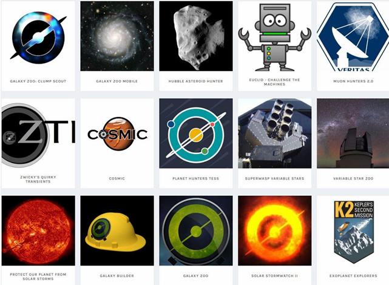
Fig. 1: Zooniverse Projects on astronomy and astrophysics.
Exoplanet Discovery:
Space missions such as NASA’s Kepler and TESS have monitored hundreds of thousands of stars, producing enormous collections of light curves. Light curves capture tiny, periodic dips in a star’s brightness that may signal a planet passing or transiting across its face. As of now, the search for exoplanets around other stars has become one of the most exciting frontiers in modern astrophysics. In order to analyze such light curves, scientists and researchers have developed automated algorithms. Using such algorithms, computers are remarkably efficient at scanning the sea of data and flagging potential signals of the presence of exoplanets. Yet complex patterns or combined light curves might mislead the algorithm. Additionally, perfect observations are also rare in scenarios where multiple data points are missing. Besides random stellar activity, instrumental noise, and subtle irregularities can mimic or obscure planetary signatures. Under such scenarios, human insight becomes invaluable. Citizen science platforms allow volunteers to visually inspect such light curves, which helps to confirm genuine planetary transits and spot unusual patterns that automated systems might miss. An example of such a project is Planet Hunters.
Fig 2: Planet Hunters interface for detecting exoplanets
Time-Domain Astronomy:
Astronomy is primarily a time-dependent study. Many of the most exciting events in the cosmos, such as supernovae, gamma-ray bursts, and tidal disruption events, appear suddenly and fade quickly. Capturing them requires fast identification and immediate follow-up observations. Organizations like the American Association of Variable Star Observers continue to coordinate dedicated amateur astronomers who monitor variable stars night after night.
Distributed Computing:
A few of the distributed computing projects harness the idle processing power of volunteers’ computers. Notable among the projects are: SETI@home (1999), developed by researchers at the University of California, Berkeley, who invited public participants to analyze radio signals in the search for extraterrestrial intelligence. Another project, Einstein@Home, analyzes data from gravitational wave detectors and radio telescopes, searching for pulsars and other signals. Volunteers’ computers perform computationally intensive analyses that would otherwise require dedicated supercomputers.
Near-Earth Objects:
Asteroid detection and tracking
represent another domain where citizen scientists play a
vital
role. Organizations such as the International
Astronomical Union coordinate reporting and naming
conventions. Amateur contributions enhance planetary
defense efforts by refining orbital parameters. In some
cases, amateurs have discovered comets and minor
planets that later received official designations. One such
example is the Indian based amateur astronomer Amar
Sharma, who discovered the asteroid “Sharma 380370”, named after him (inset Figure).
Social and Scientific Impact of Citizen Science:
Citizen science has done more than only generate valuable research—it has also reshaped how society connects with science. Contributing to such efforts is the “Open data” policies from agencies such as NASA and the European Space Agency that have made astronomical data accessible to anyone with an internet connection. Students, teachers, retirees, and enthusiasts across the globe can now work simultaneously with the same datasets used by professional astronomers. Access to online platforms further reduces geographic and economic barriers, allowing individuals in regions without major observatories to contribute meaningfully to the frontline research. Equally important is the sense of community these platform fosters. Volunteers are often motivated by curiosity and a desire to contribute to something larger than themselves. Various project forums are seen to frequently evolve into vibrant spaces where participants discuss and exchange ideas, celebrate discoveries together, while collaborating on the specific research. Oftentimes, this engagement translates into a concrete scientific output. Citizen science initiatives have produced hundreds of peer-reviewed publications, with volunteers often acknowledged or included as co-authors. As previously mentioned, Galaxy Zoo, for example, has numerous studies that explored galaxy morphology, star formation, and environmental influences. Likewise, participants in Planet Hunters have also helped confirm new exoplanets. The true strength of these contributions lies in their methodological rigor. By combining multiple independent classifications, applying statistical aggregation, calibrating results against expert analyses, and maintaining transparent workflows, citizen science projects ensure that their findings are both accurate and reproducible. Taken together, these practices demonstrate that citizen science is not merely inclusive and inspiring—it is also grounded in the same standards of reliability and scientific integrity that define professional research.
Challenges and Future Directions:
Despite its successes, as reported in this short article, citizen science faces several challenges in its implementation. Mainly, issues related to
Data Quality Control: For ensuring consistent and accurate classifications, the process or scientific output requires multiple independent assessments and careful statistical analysis.
Volunteer Retention: Engagement often declines over time. Sustaining participation requires thoughtful design and feedback mechanisms. A small study conducted by Dr. Bandana Das (2025) found that overall engagement levels were modest. However, volunteer retention was highest among participants who accessed projects through computers. In contrast, the greatest initial engagement came from users on mobile or other portable devices, although retention rates within this group were comparatively lower.
Several additional challenges—such as equity of access, recognition and credit, and ethical considerations—can be addressed through thoughtful planning and careful management. By implementing inclusive policies, ensuring fair acknowledgment of contributions, and maintaining transparency in data use and research goals, citizen science initiatives can
reduce barriers and strengthen
trust. Such deliberate efforts are
essential
for
expanding
sustaining
meaningful
and
public
participation in scientific research.
The next decades will likely witness
deeper integration of citizen science
into astrophysical research. As
telescopes grow more powerful and
datasets more complex, the need
for
collaborative
analysis
will
intensify. One such example is the
Vera C. Rubin Observatory (inset
Figure), which became operational
in October 2025. It will conduct the
Legacy Survey of Space and Time
(LSST) and will generate tens of terabytes of data nightly. Although the automated systems will detect millions of transient events, citizen science platforms are expected to help filter, classify, and prioritize unusual phenomena.
Fig: Vera C. Rubin Observatory
Conclusion
In conclusion, the deep interconnectedness between citizen science and astronomy reflects the unique cultural place astronomy has held in human civilization since antiquity. Unlike laboratory sciences limited to specialized facilities, the night sky is a shared heritage—visible and accessible to all. Citizen science restores this historical connection, linking modern astrophysics with its roots in collective observation and curiosity. Today, citizen science is no longer a peripheral activity. It shows that exploring the universe is not the exclusive domain of professionals but a collaborative human endeavor. In this renewed partnership between experts and the public, astronomy and astrophysics are, in many ways, returning to their origins—sciences shaped by people, united beneath a common sky.
References
Vera C. Rubin Observatory. Legacy Survey of Space and Time (LSST).
Pranami Baishya Research Scholar, Gauhati University
Introduction:
For decades, scientists assumed that quarks, the fundamental building blocks of matter, could only unite in simple pairs or triplets. This exquisite image helped form our knowledge of the subatomic realm. However, it appears that nature is not restricted by simplicity. Tetraquarks and pentaquarks are exceptional particles composed of four and five quarks, demonstrating that matter may organize itself in considerably more complex ways than previously thought.
Their research sheds fresh light on the underlying dynamics of the strong force, implying that the more we delve into the cosmos, the richer and more fascinating its structure becomes. Exotic hadrons challenge and broaden the standard quark model. Quantum Chromodynamics (QCD) allows for a wider range of particle configurations, including those with four or five quarks, whereas hadrons were previously thought to be either mesons (quark-antiquark pairs) or baryons (three quarks). The fundamental principle governing all observable particles in the subatomic realm is color neutrality, or being a "color singlet."
Discovery of Tetraquarks:
In 2003, the Belle Collaboration in Japan discovered a new particle known as X(3872), providing the first strong evidence for a Tetraquark. This particle was identified during high-energy electron-positron collisions. What distinguished X(3872) was that its attributes did not correspond to any known meson or baryon. Its mass, decay channels, and behavior indicated that it could not be explained by the standard quark-antiquark model.
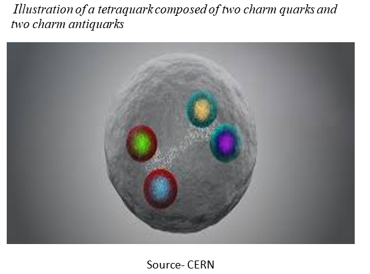
Fig 1: Illustration of tetraquark
This prompted physicists to speculate that X(3872) could be a Tetraquark, a confined state of two quarks and two antiquarks. Although the exact nature of this particle is still contested, it was the first credible step toward proving the existence of four-quark systems. Since then, several more tetraquark possibilities have been detected in other tests, bolstering the evidence that these unusual states are real.
Discovery of Pentaquarks:
The discovery of Pentaquarks occurred later, but had a greater impact. In 2015, the LHCb Collaboration at CERN announced the discovery of pentaquark states while examining the disintegration of the Lambda baryon. Unlike previous clues, this discovery presented conclusive and statistically significant evidence for a five-quark system. The detected states had features that could only be explained if they were made up of four quarks and one antiquark.
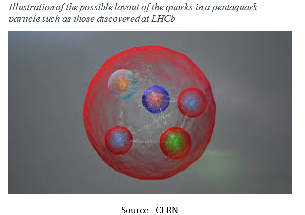
Fig 1: Illustration of pentaquark
Detection and QCD Structure:
Pentaquarks and tetraquarks were not directly observed. Rather, their presence was deduced by the collision of high-energy particles, examination of decay products, and detection of resonance peaks in experimental data. The structure of these exotic hadrons in Quantum Chromodynamics (QCD) is largely determined by the notion of color confinement.
Multi-quark systems must arrange their internal color charges so that the overall state stays neutral (color-singlet). For example, in tetraquarks, two quarks can unite to produce a diquark in a color antitriplet, while the two antiquarks form an antidiquark in a triplet, resulting in a color-singlet combination. Alternatively, they might exist as two color-neutral mesons loosely bonded together (molecular states). Similarly, pentaquarks can be represented as compact five-quark states or as baryon-meson molecular systems.
Conclusion:
By showing that quarks can combine in ways beyond traditional mesons and baryons, exotic hadrons expand our understanding of the strong force and open new directions for research in particle physics. Each new observation brings us closer to uncovering the deeper principles that govern the universe. Tetraquarks and pentaquarks are a reflection of the universe’s hidden complexity, quietly reminding us that there is always more to explore and understand.
Significant aspects of Fundamental Physics
Saubhik Das Research Scholar, Gauhati University
Quantum Chromodynamics?
Quantum Chromodynamics (QCD) is the fundamental physical theory describing the strong nuclear force, which affects elementary subatomic particles called quarks and composite particles (protons, neutrons, mesons) made of quarks.
In quantum chromodynamics (QCD), "chromo" refers to color charge, which is analogous to electric charge in electromagnetism. Just as electric charge is the source of the electromagnetic force, color is the source of the strong force. The term "chromo" in chromodynamics comes from the Greek word for color.
➤ Unlike electromagnetism, QCD posits that force-carrier particles, called gluons, transmit the strong force between particles carrying a strong charge called "color". There are three types of color charge: red, green, and blue, as well as anti-colors. Mixing all three colors produces a neutral particle, such as baryons (protons and neutrons). Antiquarks neutralize a quark's color in mesons.
➤ Key features include color confinement, which prevents isolated quarks from being observed, and asymptotic freedom, where quark interaction weakens at extremely short distances.
➤ Quarks interact by exchanging gluons, which also carry color charges, unlike the photons of quantum electrodynamics. Eight kinds of gluons exist to allow all possible interactions between the three colors of quarks. The interactions between gluons prevent color charges from being pulled apart.
The Quark Model?
The quark model is a classification scheme for hadrons (composite particles made of quarks).
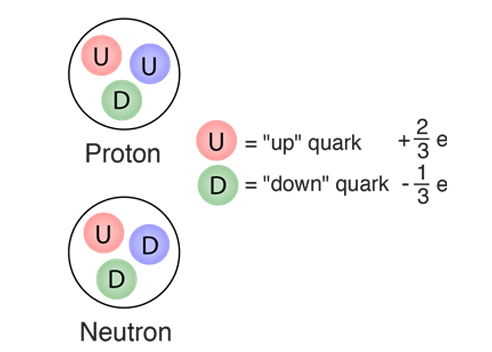
Fig 1: Baryon Structure (Proton and Neutron)
Baryons: Composed of three quarks ($qqq$). Examples: a proton ($uud$) or a neutron ($udd$).
Mesons: Composed of a quark-antiquark pair ($q\bar{q}$).
Color charge: Quarks carry one of three colors (Red, Green, Blue), and combinations must be "colorless" (White).
Quantum Field Theory?
Definition: Quantum Field Theory (QFT) merges quantum mechanics with the laws of physics governing fields, portraying particles such as electrons and photons as excitations of these fields.
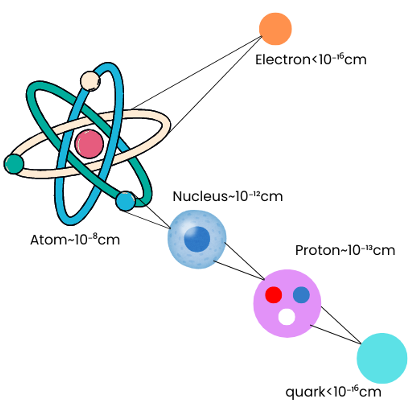
Fig 2: Scale of Subatomic Particles
• In theoretical Physics, Quantum field theory (QFT) is a theoretical framework that combines field theory, special relativity and quantum mechanics.
• QFT is used in Particle Physics to construct physical models of sub-atomic particles and in condensed matter physics to construct models of quasiparticles.
• The current Standard Model of particle physics is based on QFT.
• Despite its extraordinary predictive success, QFT faces ongoing challenges in fully incorporating gravity and in establishing a completely rigorous mathematical foundation.
• Its development began in the 1920s with the description of interactions of light and electron, culminating in the first quantum field theory - Quantum Electrodynamics.
Macroscopic Quantum Mechanical Tunnelling and Energy Quantisation in an Electric Circuit
Jitu Moni Kalita Bsc 3rd year
Introduction:
In classical physics, it is often possible to predict the future behaviour of a system with
great accuracy. However, when we examine the universe from a quantum mechanical
perspective, such certainty disappears. Instead of definite outcomes, quantum mechanics
describes events in terms of probabilities. An event can exist in many possible states until
it is observed, at which point only a single outcome becomes real—an effect commonly known
as the collapse of the wave function.
In 1924, Louis de Broglie introduced the revolutionary concept of matter waves, proposing
that every particle in the universe possesses both particle-like and wave-like behaviour.
This dual nature is responsible for a wide range of quantum phenomena that cannot be
explained using classical mechanics. Electrons, atoms, and even larger systems display
interference, diffraction, and quantisation due to their wave properties.
With advancements in modern technology, physicists are increasingly shifting from classical
models to quantum-based approaches. Although the term “quantum” is usually associated with
microscopic particles, quantum mechanical behaviour is not limited to the microscopic
realm. A remarkable example is the Josephson Junction, a macroscopic device
in which electrons tunnel through an insulating barrier. This demonstrates that quantum
effects, such as tunnelling and energy quantisation, can appear even in systems visible to
the naked eye, bridging the gap between microscopic physics and the macroscopic world.
What is Quantum Tunnelling?
According to classical mechanics, a particle with energy E cannot cross a potential
barrier of height V₀ if E < V₀. For example, an electron inside a solid
should never escape the surface if its energy is below the barrier potential. Classical
theory would predict a strict boundary beyond which the particle cannot exist.
Quantum mechanics, however, tells a very different story. Since particles also behave as
waves, their wave functions extend beyond classical boundaries. Even when E < V₀,
the wave function does not abruptly drop to zero at the barrier. Instead, it decays
gradually inside the barrier, leading to a small but non-zero probability that the particle
can appear on the other side. This phenomenon is called
quantum tunnelling.
Quantum tunnelling plays a crucial role in numerous natural and technological processes.
It enables nuclear fusion inside stars, allows electrons to move between atoms in
semiconductors, and forms the operating principle of devices such as Scanning Tunnelling
Microscopes (STM), Tunnel Diodes, and Josephson Junctions. Without tunnelling, many of the
technologies that shape our modern world simply would not exist.
Macroscopic quantum tunneling :
Quantum tunnelling is also seen on the macroscopic level using a special circuit known as
a Josephson Junction. In this junction, two superconductors are placed very close to
each other and separated by a thin insulating layer.
A superconductor is a conductor cooled to 0 K (or very close to absolute zero).
Between 1924–1925, Albert Einstein and Satyendra Nath Bose predicted that at extremely
low temperatures, many bosons occupy the lowest quantum state. Thus, quantum effects such as
wave interference become visible on a macroscopic scale.
Condensation refers to a large number of particles occupying one or more specific states.
For example, in BCS theory, a superconductor forms when Cooper pairs condense.
If two superconductors are separated by an insulating barrier of width x = a, and taking
the left edge of the barrier as origin, the system is divided into three regions:
Fig 1: Quantum Tunneling through Joshphson Junction
The Fig-1 represent the tunneling through this junction , this junction also prove that
quantum mechanics is not only valid in microscopic lavel but also valied in macroscopic
lavel. This year (2025) John Clarke , Michel H. Devoret ,John M. Martinis was awarded by
Nobel prize in physics for their experiments demonstrated quantum behavior in electrical
circuits large enough to be seen and held, bridging the gap between the microscopic
quantum world and macroscopic systems. This discovery has played a key role in the
development of quantum technology and quantum computing, allowing physicists to study
and apply quantum principles on engineered circuits and devices . Their work builds
directly upon earlier ground-breaking research, such as the Josephson effect, and has far
reaching implications for both fundamental physics and emerging quantum technologies.
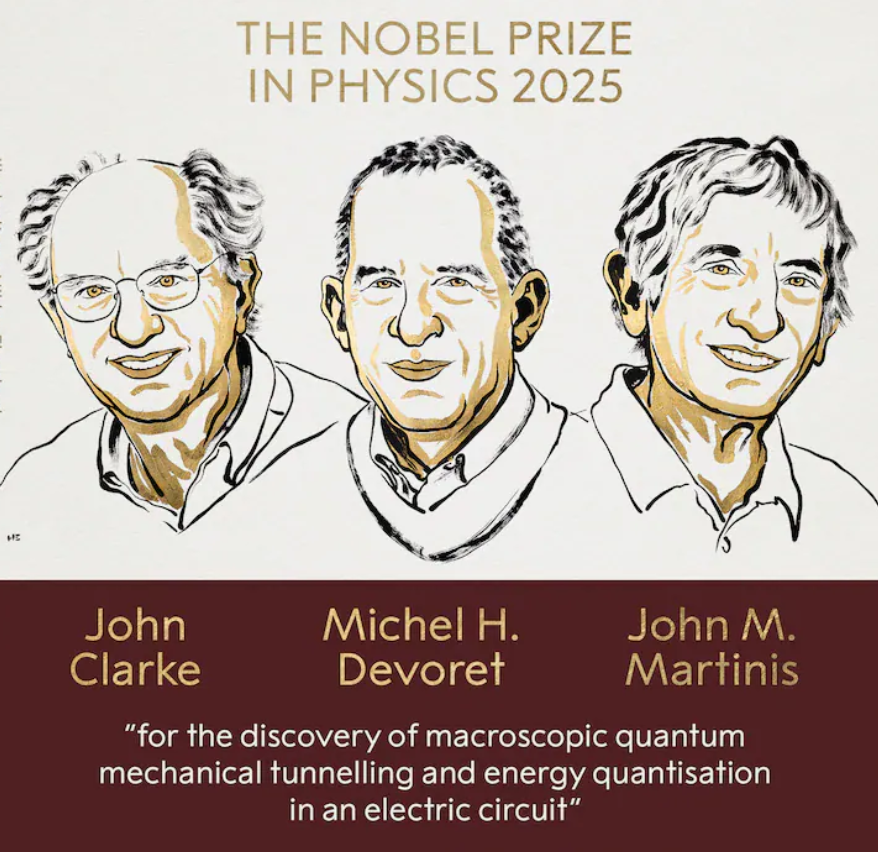
Fig 2: Nobel Prize in Physics 2025 , Source:ndtv.com
References
Coon, S. A. (2015).
Quantum Tunneling.
University of Illinois at Urbana-Champaign.
Download PDF
Devoret, M. H., & Martin, R. (2023).
Macroscopic superconducting circuits behave quantum mechanically.
Physics, 18, 170.
View Article
Wikipedia contributors. (n.d.).
Josephson effect.
Read Online
Standard Candles – The Light That Measures the Universe
Alisha Das Bsc 3rd year
Introduction:
For thousands of years, humans have been captivated by the tiny specks scattered across the
night sky. These distant points of light inspired curiosity and wonder, leading people to ask
one fundamental question: How far away are the stars? To answer this question,
astronomers developed several techniques to measure cosmic distances, one of the most
important being the concept of standard candles.
A standard candle is a celestial object or event whose true brightness (absolute luminosity)
is known. By comparing its actual brightness with how bright it appears from Earth,
astronomers can calculate its distance. This method relies on the
inverse square law of light, which states that the intensity of light from a
point source decreases in proportion to the square of the distance from that source.
In simple terms, as a light source moves farther away, it appears dimmer. By measuring
this decrease in brightness, the distance to the object can be determined.
Cepheid Variable Stars as Standard Candles
One of the most reliable standard candles in the universe is the
Cepheid variable star. These massive stars undergo regular cycles of
expansion and contraction, causing their brightness to vary periodically.
Their pulsations resemble a cosmic heartbeat, expanding and contracting in a
predictable rhythm.
In 1912, the astronomer Henrietta Swan Leavitt discovered a remarkable
relationship between the pulsation period of Cepheid stars and their intrinsic
luminosity. She found that stars with longer pulsation periods are intrinsically
brighter than those with shorter periods. This discovery, known as the
period–luminosity relationship, became one of the most powerful tools
for measuring distances to objects far beyond our galaxy.
Later, Edwin Hubble used Cepheid variables to determine the distance
to nearby galaxies and demonstrated that the Milky Way is only one among
countless galaxies in the universe. His work ultimately led to the discovery
that the universe itself is expanding.
Other Types of Standard Candles
To map the structure of our local galactic region, astronomers often use
RR Lyrae stars. These stars are smaller and less luminous than
Cepheid variables but still provide reliable measurements of distance within
the Milky Way. By observing these stars, astronomers can trace the structure
and distribution of stars throughout our galaxy.
For exploring even greater distances, astronomers rely on
Type Ia supernovae. These extraordinary stellar explosions occur
when a white dwarf star reaches a critical mass and undergoes a catastrophic
thermonuclear explosion. At their peak brightness, Type Ia supernovae can shine
as brightly as an entire galaxy, making them visible across billions of
light-years. Because their peak luminosity is nearly uniform, they serve as
excellent standard candles for measuring distances on a cosmic scale.
Cosmic Significance of Standard Candles
Type Ia supernovae have played a crucial role in modern cosmology.
Observations of these distant explosions revealed that the expansion of the
universe is not slowing down as once expected, but is instead
accelerating. This surprising discovery led scientists to propose
the existence of an unknown force called dark energy, which now
appears to dominate the large-scale dynamics of the universe.
The light from standard candles travels enormous distances before reaching
Earth. When astronomers observe this light, they are effectively looking back
in time, studying events that occurred millions or even billions of years ago.
Each photon carries information about the history and evolution of the cosmos.
Conclusion
Standard candles are more than just tools for measuring distance. They act as
cosmic storytellers, revealing the structure, scale, and evolution of the
universe. By studying their light, astronomers uncover patterns and laws that
govern the cosmos. These distant beacons remind us of humanity’s endless
curiosity—curiosity that began when someone first gazed at the night sky and
asked a simple yet profound question: How far away are those stars?
Physics of the Higgs Boson: The God Particle
Ayush Roy Bsc 3rd year
Introduction:
Among the most intriguing questions within physics is the following: why does matter
have mass? Though we can describe how objects move or interact, the origin of mass
remained an enigma until the Higgs boson was discovered, and is often referred to as
the "God Particle." The discovery confirmed an important piece of the Standard Model
of particle physics and added to our understanding of the universe.
Understanding the Mystery of Mass:
Mass is more than weight; it defines how particles interact with forces and each other.
Elementary particles, like electrons and quarks, must have mass to build up atoms,
molecules, and eventually stars and planets. For decades, the Standard Model had no
explanation for why particles possess mass.
In the 1960s, Peter Higgs and others proposed the idea of the Higgs field, an invisible
energy field that fills the universe. As particles move through this field, they experience
resistance—similar to a swimmer moving through water. This resistance is what we call
mass. Without the Higgs field, particles would remain massless, move at the speed of light,
and matter as we know it would not exist.
The Higgs Boson:
The Higgs boson is the particle associated with the Higgs field—a disturbance that confirms
its existence. Its discovery required immense effort from the global scientific community,
particularly through experiments conducted at the Large Hadron Collider (LHC) at CERN.
This 27-km underground accelerator collides protons at extremely high energies to recreate
conditions similar to those just after the Big Bang.
Scientists analyzed vast amounts of data to detect the fleeting signature of the Higgs boson.
On July 4, 2012, the ATLAS and CMS collaborations announced the discovery of a new particle
consistent with the Higgs boson, marking a historic breakthrough in physics.
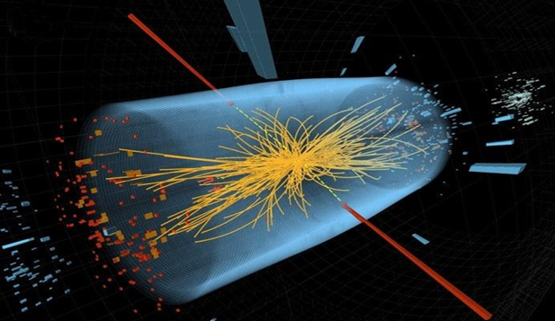
Fig 1: Visualization of Higgs boson decay into four muons at the CMS detector, LHC
Importance to Physics:
The Higgs boson is crucial because it explains how particles acquire mass through interaction
with the Higgs field. Without it, the Standard Model would be incomplete, and the universe
as we know it—composed of matter, stars, and galaxies—could not exist.
Beyond confirming theoretical predictions, the Higgs boson opens new questions in physics.
It may provide insights into dark matter, supersymmetry, extra dimensions, and the long-term
stability of the universe. Thus, it is not just a discovery, but a gateway to deeper understanding.
Analogy of the Higgs Field:
Imagine walking through a crowded room. People gather around you, slowing your movement.
Similarly, particles moving through the Higgs field experience resistance. Some particles,
like photons, pass through effortlessly and remain massless, while others interact strongly
and gain significant mass. This simple analogy helps explain how mass arises from interaction
with a universal field.
Conclusion:
The discovery of the Higgs boson stands as one of the greatest achievements in modern science.
It explains the origin of mass, validates the Standard Model, and opens pathways to new physics.
Although often called the "God Particle," it represents only a part of the deeper structure of
reality and does not imply any theological meaning. Its discovery marks a milestone in humanity’s
quest to understand the universe.
Wormholes in the Lab? Quantum Simulation of Exotic Spacetime
Nikitha Guntla BSc 2nd year
"When Science fiction meets lab reality "
John Mailthot
Introduction:
A "Wormhole" is a theoretical passage that connects two separate regions of spacetime, like a tunnel or bridge through a mountain.In theoretical physics, a wormhole is a solution to Einstein's equation of General Relativity that connects two separate points in spacetime.Think of a tunnel with two mouths, each located at different locations or even different times in the universe. Theoretically, you could enter one mouth and come out the other,skipping vast distances or timelines. While theoretically possible solutions to physical equations, wormholes have been never observed or detected in the real universe. Wormholes might not just be figments of imagination or products of far future physics anymore. Because Recent advances in quantum computing and simulation suggest that we might be able to model, and even mimic, aspects of wormholes right here in our laboratories. Now before you get too excited about teleporting to another galaxy, here's the catch. Wormholes, as far as we know, are incredibly unstable.They'd collapse almost immediately after forming. Scientists believe that in order to keep one open, you'd need something called exotic matter -a hypothetical type of matter with negative energy density and pressure. That kind of stuff hasn't been discovered yet.So for now, real wormhole travel is still off the table.
Baby Wormhole on a Quantum Computer:
In 2022, researchers from Caltech, Google, Fermilab, and others made headlines by using Google's quantum computer, Sycamore, to simulate a( toy model of a wormhole) kind of baby wormhole .While no real holes in spacetime were created, this experiment marked a major milestone in the field of quantum simulation and theoretical physics.To be clear, they didn't create a real wormhole. But they simulated a simplified version of one.The team used a theoretical model known as the Sachdev Ye Kitaev (SYK) system, which has deep connections to black hole physics and quantum gravity.In their setup, they encoded a bit of quantum information a qubit into one part of an entangled quantum system. That qubid later reappeared in another part, simulating how information might transverse a wormhole. Although this resembles quantum teleportation, the experiment was also inspired by a theoretical idea called the ER=EPR conjecture.
EP=EPR is a theory that suggests wormholes (Einstein Rosen bridges, ER) and quantum entanglement (EPR-named after Einstein ,Podolsky, and Rosen again)might actually be two sides of the same coin. Basically, it says if two parts are entangled, they might be connected by a sort of microscopic wormhole. The experiment with Sycamore didn't prove this ,but it did demonstrated that quantum computers can simulate it's predicted behavior, offering a rare and valuable opportunity to test aspects of quantum gravity in a lab setting. That's groundbreaking, considering that quantum gravity -an attempt to unify gravity with quantum mechanics remains one of the biggest unsolved puzzles in physics.
Why Quantum Wormhole Simulations Matter?:
Firstly, quantum simulations like this bridge gap between quantum mechanics( which exlains particles and forces on the smallest scales) and general relativity (which explains gravity), two fundamental theories that currently don't align. If we can simulate aspects of gravity using controllable quantum systems, we may begin to test and refine theories that have previously existed only on chalkboards and in abstract mathematics.
Secondly, these experiments showcase the evolving power of quantum computers. These simulations are a proof of concept that quantum computers can be used for more than just factoring large numbers or optimizing logistics. Once seen mainly as tools for code breaking or solving optimization problems, quantum devices are now stepping into the realm of fundamental physics helping Scientists explore the nature of spacetime itself.
Limits and Misconceptions: No Real Spaceships Yet :
The experiment was conducted with only a few qubits and was based on a highly simplified model. Real spacetime is vastly more complex, and again, just to be super clear: we didn't open a wormhole. We didn't send a scapeship or even a photon across the galaxy. We sent a qubit through a simulation. But still baby steps. Many physicists caution that While the analogy between quantum teleportation and wormholes is mathematically intriguing, it may not generalize to realistic physical scenarios. In short, we're exploring shadows of wormholes not the real thing.
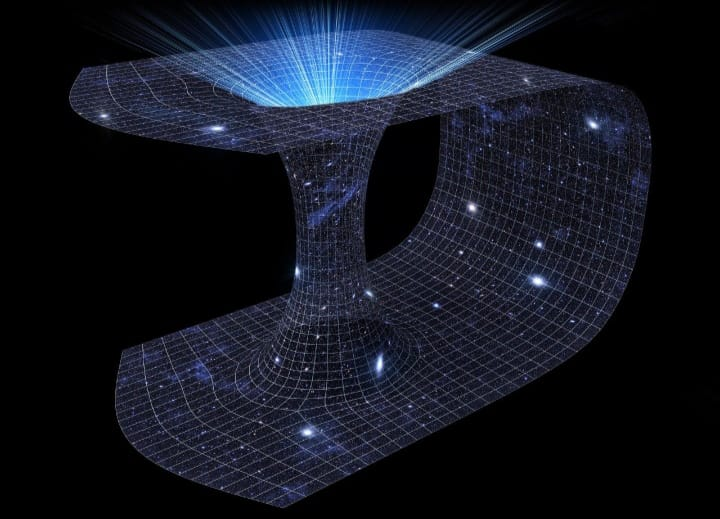
Fig 1: Visual representation of worm-hole, Source:astronomy.com
References
What are wormholes? An astrophy-sicist explains these shortcuts through space-time View Article
Physicists observe wormhole dynamics using a quantum computer
View Article
Current Trends in Thermoelectric Technologies: Prospects for Thermal Regulation
Bhargav Baishya BSc 2nd year
Introduction:
Thermoelectric technologies are playing an increasingly important role in the development of modern energy systems due to their ability to convert thermal energy into electricity and vice versa. This makes them indispensable in the context of the growing demand for energy-efficient solutions, especially in industries seeking to reduce carbon emissions and optimize energy use. Thermoelectric materials are used in a wide range of technologies—from solar panels to thermal management systems in electric vehicles.
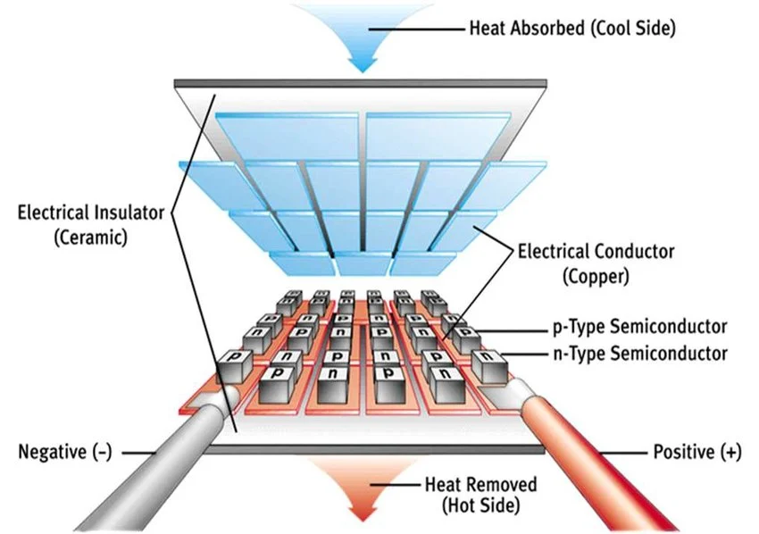
Fig 1: Internal Structure of a Thermoelectric Module, Source: ResearchGate
Modern thermoelectric materials and technologies continue to evolve, providing new opportunities to improve energy efficiency and create more sustainable energy systems. Solar photovoltaic (PV) systems are a critical component of the transition to renewable energy sources. However, the efficiency of PV systems can significantly suffer from temperature increases; various cooling methods have been developed to mitigate this issue, maintaining optimal operating conditions and improving the overall system performance.
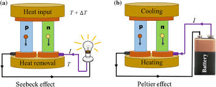
Fig 2: The Seebeck and Peltier Effects, Source: ResearchGate
Thermoelectric Heat Pumps:
Thermoelectric heat pumps are technologies that use thermoelectric effects to manage heat flow. The main components of such systems are thermoelectric generators or thermoelectric coolers, converting electric current into temperature gradients.
Applications in Electric Vehicles:
Ensuring proper thermal management and batteries is a crucial task for enhancing the efficiency and safety of electric vehicles. Recent research focuses on the development and optimization of thermoelectric cooling systems for batteries as well as the exploration of various methods and materials that promote effective heat dissipation. Scientists in research analyze various battery heating methods at low temperatures, which help maintain normal battery operation, extend their lifespan, and are particularly relevant for automotive applications.
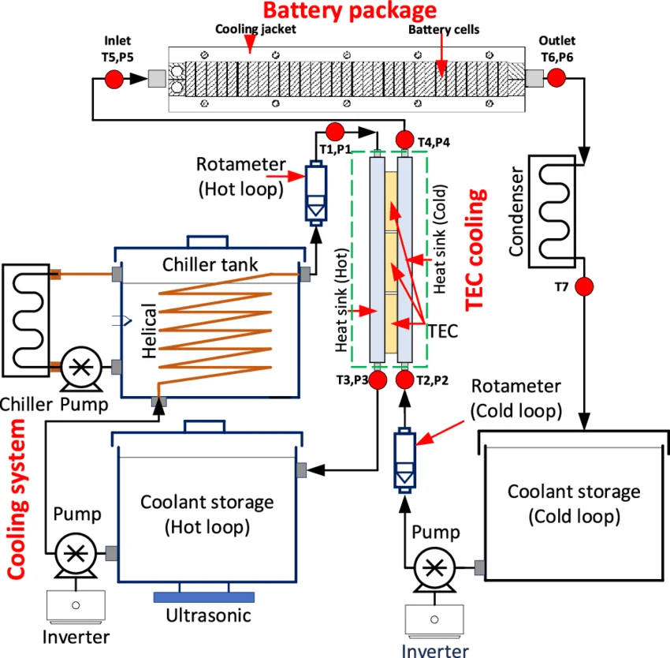
Fig 3: Thermoelectric Cooling in EV Battery Packs, ResearchGate
Efficiency and Hybrid Systems:
The efficiency of modern heat pumps can be enhanced by using hybrid systems. Specifically, their coefficient of performance can exceed that of traditional systems by 15–20%, making them more attractive for use in compact and mobile devices. The use of solar panels with thermoelectric modules can improve efficiency by 10–15% compared to traditional solar panels.
The future of energy management lies in maximizing waste heat recovery and precision regulation. Thermoelectric technologies offer a robust, solid-state solution that scales from small portable electronics to massive automotive and solar infrastructures. As materials science improves the figure of merit (ZT), these systems will become even more central to our global carbon reduction goals.
Nanosensors: Enhancing Environmental Monitoring
Dharmendra Bania BSc 1st year
Introduction:
Nanosensors are highly sensitive devices that can detect and measure physical, chemical or
biological information and converts it into a usable signal.
Environmental monitoring aims to measure various parameters in air, water and soil to
ensure the quality of the environment.
Air Quality Monitoring:
Air pollution is one of the most environmental issues, causing
millions of premature deaths annually. Nanosensors can detect air pollutants like Nitrogen
oxides (NO), Sulphur dioxide (SO2), Ozone (O3), Carbon monoxide (CO) and volatile organic
compounds at the parts per billion (ppb) level.
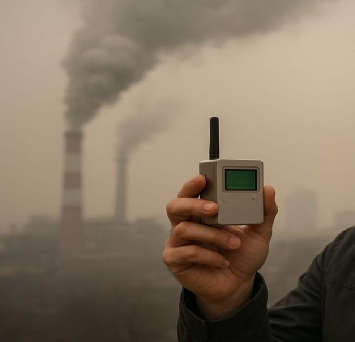
Fig 1: Air Quality Monitor Using Nanosensor
Nanosensors detects greenhouse gases such as Carbon dioxide (CO), methane (CH4) and
nitrous oxide (N2O) which contributes to global warming. Graphine based sensors can
detect these gases at extremely low concentration, high sensitivity and selectivity make
them ideal for environmental monitoring that track global climate parameters.
Water Quality monitoring: :
Water pollution causes from industrial waste, pesticides, heavy
metals and microorganism. Water nanosensors can identity harmful substances like lead,
arsenic or bacteria in drinking water.
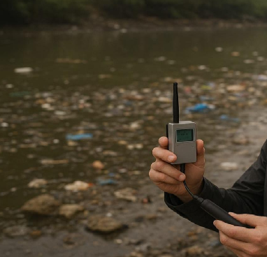
Fig 1: Water Quality Monitor Using Nanosensor
Soil Quality Monitoring:
Nanosensors can detect pathogens in the soil. Soil Contaminates
from fertilizers, pesticides, and heavy metals affects crop productivity and food safety.
Nanosensors are used in agriculture to detect soil health, nutrient levels and moisture
content.
These devices can also provide early warnings about soil degradation, allowing timely
corrective actions.
Fig 1: Soil Quality Monitor Using Nanosensor
Advantages of Nanosensors:
Nanosensors can detect pollutants at very low concentrations.
Nanosensors provide immediate feedback during environmental emergencies.
Conclusion:
Nanosensors is one of the most promising frontiers in environmental science and
technology and ability to detect pollutants for maintaining environmental safety and
sustainability.
Fusion Energy: The Quest for a Star on The Earth
Pranab Debnath BSc 1st sem
Introduction:
The dream of harnessing the power of the stars has fascinated scientists for decades. Deep inside the sun and other stars, a natural process called nuclear fusion releases an immense amount of energy, sustaining their light and heat for billions of years. If humans could replicate even a fraction of that process on Earth, it would open the door to virtually limitless, clean, and safe energy—solving one of the greatest challenges of our time. This ambition is often referred to as the quest for a star on Earth.
What is Fusion Energy?
Fusion energy is produced when two light atomic nuclei combine to form a heavier nucleus, releasing vast amounts of energy in the process. In stars, hydrogen nuclei (protons) fuse to form helium through a series of reactions under extreme temperature and pressure. The difference in mass between the initial and final particles is converted into energy, according to Einstein's famous equation $E=mc^{2}$.
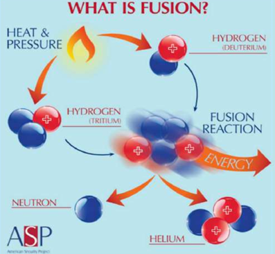
Fig 1: The Nuclear Fusion Process
On Earth, scientists aim to replicate a similar process using isotopes of hydrogen, mainly deuterium and tritium. When these two isotopes fuse, they form helium and a high-energy neutron, releasing about 17.6 million electron volts (MeV) of energy per reaction. If controlled properly, this energy could power turbines and generate electricity without the harmful byproducts associated with fossil fuels or nuclear fission.
Importance of Fusion Energy:
The world's growing energy demands and the climate crisis have made the search for sustainable energy sources more urgent than ever. Fusion offers several remarkable advantages:
Abundant Fuel Supply: Deuterium can be extracted from seawater, and tritium can be bred from lithium; both are widely available. This means fusion fuel could last for millions of years.
Clean and Safe Energy: Fusion produces no carbon dioxide or long-lived radioactive waste. Unlike fission, there is no risk of a runaway chain reaction or nuclear meltdown.
High Energy Output: Fusion releases about four million times more energy than burning coal or oil and four times more than nuclear fission for the same mass of fuel.
Global Energy Security: Because fuel sources are distributed worldwide, fusion could reduce geopolitical tensions linked to fossil fuel dependency.
The Challenge of Control:
Recreating the conditions of the sun on Earth is no easy task. To achieve fusion, scientists must heat hydrogen fuel to temperatures often exceeding 100 million degrees Celsius and confine it long enough for nuclei to collide. The main difficulty lies in containing this ultra-hot plasma; no material container can withstand such heat, so scientists use magnetic or inertial confinement methods.
Confinement Methods:
The most advanced approach is Magnetic Confinement Fusion (MCF), particularly in a doughnut-shaped device known as a tokamak. The ITER project in France aims to demonstrate a tenfold energy gain using this method. Alternatively, Inertial Confinement Fusion (ICF) uses intense lasers to compress fuel pellets, a method that recently achieved "ignition" at the National Ignition Facility (NIF) in the United States.
Conclusion:
The quest for fusion energy is humanity's bold attempt to bring a miniature sun to Earth. While engineering challenges regarding materials and tritium handling remain, the scientific foundation is now solid. If successful, fusion will stand as one of humanity's greatest achievements, providing an inexhaustible source of clean electricity for millennia to come.
Space-time : The four dimensions
universe
Sunil Kumar Paswan BSc 1st year
Introduction:
If we want to search deep in the space,the basic physics is applied to all across the universe is
concept of space-time . space and time seem like two completely different things. Space
describes about the area where an object or anything could be present ,it has dimensions such
as length , breath and height , on the other hand time, tells us when things happen: the past,
present, or future. For centuries, scientists believed that space and time were completely
separate, absolute entities-with a universal clock ticking everywhere in the universe at the same
rate, and an unchanging, rigid stage where the events of our universe play out.
But this view changed forever in the early 20th century, thanks to the revolutionary work of
Albert Einstein. Einstein showed that space and time are not independent-they are deeply
connected, and together form a single, four-dimensional continuum: “space-time"
Before Einstein’s work, the prevailing view in physics was that light, as a wave, must travel
through a medium called the “luminiferous aether”. Einstein’s theory of special relativity
eliminated the need for this concept, while his theory of general relativity offered a radically new
understanding of gravity.
Why space-time introduced :
The need to unite space and time came from odd results in physics experiments about motion
and light. For example, the famous Michelson-Morley experiment showed that the speed of light
is always the same-no matter how an observer moves relative to the light source. This was
shocking, and it broke the rules of classical physics .
To explain this, Einstein proposed that measurements of distance and time depend on the
observer's motion. Two people moving at different speeds could disagree about how far apart
two events are, or how much time passes between them. However, everyone would agree on a
single quantity, combining space and time- what's now called the "space-time interval." This
new theory merged three dimensions of space and one of time into a four-dimensional
framework.
The Building Blocks: Events and the Interval In everyday life, we describe the position of an
object using three numbers (for example, coordinates x, y, z). To completely specify an event
(like a thunderclap or lightning strike), we also need to state when it happened (t). In space
time, every “event” is described by four coordinates: (x, y, z, t). But these coordinates alone are
not enough. Different observers, moving relative to one another, will assign different
coordinates to the same event. What stays constant is the “interval” between two events,calculated by: (Δs)² = (cΔt)² – (∆x)² - (Δy)² - (Δz)²Here, c is the speed of light. This quantity, the
space-time interval, is the same for all observers and forms the foundation for Einstein’s theory
of relativity.
New Picture: Relativity and The ‘Fabric’ of Reality :
Einstein's ideas created a new way to look at gravity. Earlier, Isaac Newton pictured gravity as
a "force" pulling toward each other across space. Einstein suggested something more subtle
and beautiful: massive objects, like planets and stars, actually bend and curve the fabric of
space-time. What we feel as gravity is just objects following the curves in this fabric. This idea is
called the "general theory of relativity," and it has been confirmed by experiments, such as the
bending of light near the sun or the detection of gravitational waves.
A common analogy is to imagine space-time as a stretched rubber sheet. Placing a heavy ball
(a planet or star) on the sheet creates a dip, curving the surface. Marbles rolling nearby will
curve around the dip, just as Earth orbits the sun-not because of a mysterious force, but
because the sun has curved space-time around it.
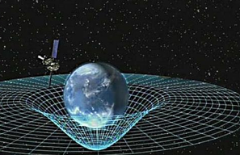
Fig 1: Bending of space febric due to heavy planet
Light Cones, World-Lines, and Causality
Physicists use "light cones" to visualize space-time. Imagine an event (like a firecracker
explosion): the light from this event spreads out in all directions at speed c, forming a cone in
space-time diagrams. Everything inside the "future light cone" can potentially be influenced by
this event; everything inside the "past light cone" could have affected it. Lines drawn through
space-time to represent the path of an object are called "world-lines." Every particle or person
traces out a unique world-line as they move through the universe.
The Big Picture: Black Holes, Cosmology, and Beyond :
Space-time is central to some of the most fascinating questions in physics: Black Holes: These
mysterious objects are regions where space-time is so fiercely curved that nothing, not even
light, can escape. The Expanding Universe: The entire universe is described as a vast,
"stretching" space-time, with galaxies moving apart as space itself expands. Gravitational
Waves: Ripples in space-time, created by violent astrophysical events, were first observed in
2015-confirming Einstein's prediction a century earlier. Contemporary research is probing the
very structure of space-time on the smallest scales, searching for a quantum theory of gravity
and new, deeper laws.
Conclusion:
Space-time is not just a concept of physics it is the fabric of universe that exists in every part of
universe ,it is often referred as fabric of reality and visualised as four dimensional block ,it
describes anything happens in the universe along the propagation of electro magnetic waves
such as light . It challenges our common-sense ideas, unites gravity and motion, and is central
to both our understanding of the cosmos and the technology we use each day.
Electricity: The Lifeline of Modern Civilization
Fariha Ahmed BSc 1st year
Introduction:
Electricity is one of the most powerful and essential discoveries in human
history. It is the invisible force that lights up our homes powers industries,
drives communication and fuels modern technology. From the moment we
wake up and switch on a light bulb to the time we charge our phones
before going to bed, electricity plays a crucial role in our daily lives. Without
it, the world as we know it would come to a standstill. This article explores
the nature of electricity, its generation, uses, importance, and challenges in
the modern world.
What is Electricity? :
Electricity is a form of energy resulting from the movement of charged
particles, mainly electrons, through a conductor such as a wire. It can be
static, like the spark we fee after rubbing certain materials, or current
electricity, which flows continuously through circuits and is used for
practical purposes
Though electricity has existed in nature for
millions of years in the form of lightning or
electric eels, humans only began to understand
and harness it in the last few centuries.
Scientists like Benjamin Franklin, Alessandro
Volta, Michael Faraday, and Thomas Edison
made significant contributions that transformed
electricity from a natural phenomenon into a
practical utility.
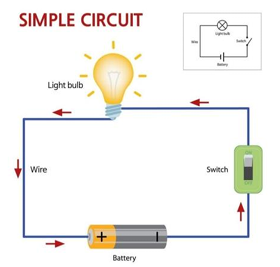
Fig 1: Simple circuit
There are two main types of electricity:
Electricity :This is the buildup of electric charge on the surface of
an object. You’ve likely experienced static electricity when you rub a
balloon on your hair or walk across a carpet and then touch a metal
doorknob.
Current Electricity : This is the flow of electric charge through a
conductor. It is the form of electricity that powers our homes and devices.
How Electricity Is Generated:
Electricity is not a primary energy source; it must be generated using other
sources of energy. Most electricity is produced in power plants where
mechanical energy is converted into electrical energy using generators.
The primary sources of energy for electricity generation include:
Fossil Fuels (Coal, Oil, Natural Gas):These are burned to produce steam,
which drives turbines connected to generators.
Nuclear Energy: In nuclear power plants, nuclear reactions release heat,
which also produces steam for turbines.
Renewable Energy Sources:
Hydropower : Uses flowing water to spin turbines.
Wind Energy :Wind turns the blades of wind turbines to generate
electricity.
Solar Power : Photovoltaic cells convert sunlight directly into
electricity.
Geothermal Energy Uses heat from beneath the Earth’s surface.
With growing concerns about pollution and climate change, there is an increasing shift towards cleaner and renewable energy sources.
Transmission and Distribution:
Once electricity is generated, it must be transported to where it’s needed.
This is done through a complex system known as the electrical grid. Here’s
how it works:
Generation:Electricity is produced at power stations.
Transmission: High-voltage power lines carry electricity over long
distances
Distribution: Substations reduce the voltage, and distribution lines deliver
electricity to homes, schools, and businesses.
Maintaining a stable supply of electricity requires a balance between
demand (how much electricity people are using) and supply (how much is
being generated). This system is managed in real time by utility companies.
Uses of Electricity:
Electricity has countless uses in modern life. Some of the most common
include:
Lighting :Electric lights brighten homes, streets, and cities.
Heating and Cooling :Electric heaters, air conditioners, and
refrigerators help maintain comfortable living conditions.
Communication :Devices like phones, computers, and the internet
all rely on electricity.
Industry :Factories and workshops use electricity to power machines
and tools.
The convenience and versatility of electricity have made it indispensable to
both economic development and personal comfort.
The Future of Electricity:
As the global population grows and technology advances, the demand for
electricity continues to rise. At the same time, there's a growing push to
reduce carbon emissions and combat climate change. This means the
future of electricity will involve:
Cleaner Energy Sources :
Expanding the use of solar, wind, and other
renewable sources.
Smart Grids
Upgrading the electrical grid to be more efficient and
reliable using digital technology.
Energy Storage Improving battery technology to store electricity for use
when generation is low.
Electrification of Transport
Replacing
gasoline-powered vehicles with electric
ones.
Decentralized Generation
Homes and
businesses generating their own electricity
using solar panels and other local systems.
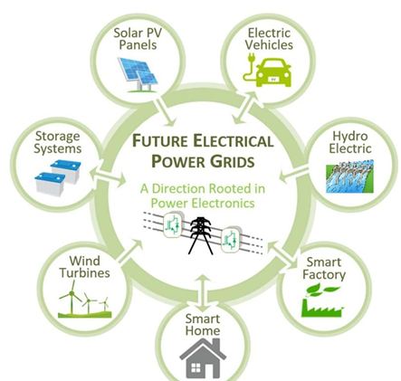
Fig 1:Use of electricity
These trends promise a more sustainable and energy
efficient future.
Conclusion:
Electricity is a remarkable form of energy that powers the modern world.
From its basic principles to its complex infrastructure, electricity enables
much of what we take for granted. As we look to the future, balancing our
growing energy needs with environmental sustainability will be one of the
great challenges—and opportunities of our time. Understanding electricity
is the first step toward using it wisely and responsibly.
A WONDER MATERIAL- GRAPHENE
Raj Debnath B.sc 1st year
Introduction:-
The advent of graphene, a two dimensional material with extraordinary properties incheding Exceptional strength, Extreame Flexibility high electrical Conductivity. It is the world's first 2D material Which can be described as one atom thick layer of graphite. Graphene is not found naturally and only be obtain artificially graphene is the strongest, thinnest material known to exist. Andre geim and Kostya Novoselov received 2010 novel prize in Physics for their pioneering research on graphene. It is one-million thinner than the diameter if a single hair. Graphene despite being only one atom thick is still Visible to the naked eye. It can be wrapped up into Fullerenes rolled into 1D nanotubes or stacked into 3D graphite.
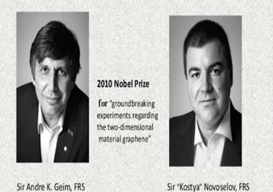
phene was first isolated in the lab by Professor Andre Geim with former student Konstantin Novoselov at the University of Manchester, England in 2004. 2010 Nobel Prize for "groundbreaking opriments regarding the two-dimeminnal material graphene". Sir Andre Geim, FRS. Sir Kostya Novoselos, FRS. Graphene can be produced using Top-down methods like Mechanical Exfoliatis and liquid phase exfoliation or Bottom (CVD) growing graphene from Carbon precursor on a metal crystal. (It is the basic structured element of other allotropes (graphite, charcoal, carbon nanotube and fullerenes).
Propertries of graphene :-
* Chemical Properties :- Graphene is chemically most reactive and pure of carbon. Only from of carbon in which each single atom is in exposure for chemical reaction from two sides (due to the 2D Structure). Carbon atoms at the edge of graphene sheets have special chemical reactivity. Graphene burns at high temperature (e.g. 350 C). Graphene has the highest ratio of edgy carbons (in comparison with similar materials such as carbon nanotubes). Graphene is commonly modified with oxygen - and nitrogen- containing functional groups.
* Electronic Properties:- It is a zero-overlap semimetal (with both holes and electrons as charge carriers). It has a very high electrical conductivity so it has very low transmission losses. Electrons are able to flow through graphene moe freely than through copper. The electrons travel through the graphene sheet as if they carry no mass, as fast as just one hundredth of the speed of light.
* Mechanical Properties:- To calculate the strength of graphene, scientists use a technique called Atomic Force Microscopy. It was found that graphene is the harder than diamond and about 300 time harder than steel. the tensile strength of grafene exceeds 1tpa. it is strecheable up to 20% of its initial lenghth. it is expected that graphene mechanical properties will find application into making a new generation of super strong composite material and combined with its optical properties, making flexible displays. it is many times stronger than steel, yet lightweight and flexible.
* Thermal properties :- graphene is highly efficient thermal conduter. its thermal conductivity is much higher than all other carbon structure such as carbon nanotubes, graphite and diamond (>5000 Watt /meter Kelvin)at room temperature. Graphite, the 3D version of graphene ,shows a thermal conductivity about 5 times lesser than graphene (1000 Watt/meter Kelvin-1). The material's high electron mobility and high thermal conductivity could lead to chips that are not faster but also better at dissipating heat.
Graphene applications: What is graphene used for ?
1) Biomedical: Graphene has diverse biomedical uses, leveraging its electrical conductivity, high surface area and biocompatibility for applications such as drug medical imaging, neural interfaces and antibacterial therapy.
2) Graphene Biosensors :- One of the advantages of graphene is its ability to detect minimal amounts of substance. Even a single molecule in a large volume can be detected with it. Biosensors made of graphene, graphene oxide or reduced graphene oxide show ultrasensitive properties when detecting DNA, ATP, dopamine, oligonucleotides, thrombin and different atoms. There are several medical companies that already sell medical sensors made with graphene.
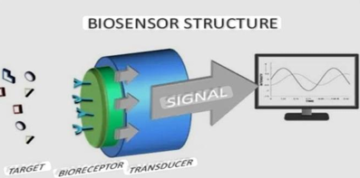
BIOSENSOR STRUCTURE
3)Energy Storage:- Since graphene is the world's thinnest material, it also extremely high surface-area to volume ratio. This makes graphene a very promising material for use in batteries and supercapacitors. Graphene may enable batteries and supercapacitors (and even fuel-cells) that can store more energy-and charge faster, too.
Higher capacity
Faster charging
Light weight
Flexibility
High temperature range
The advantages of graphene batteries
4) Coating, electronics and more :- Graphene is optimal for coating on a variety of surfaces, and it's not just because of the material's thinness. It's hydrophobic, meaning it repels water aggressively. Therefore, it can be used to coat ships to reduce drag and allow for faster speeds and better fuel efficiency. It also can be used to coat aircraft and structures that are at risk of damage from lightning since its conductivity allows for electricity to quickly and harmlessly be dispersed.
Conclusion:
The future of graphene involves widespread adoption across electronics, Medicine, Energy and aerospace, transforming industries with its superior strength, conductivity and flexibility, though large - scale, high- quality production remains a key challenge. Emerging technologies like faster computers, wearable electronics and more efficient batteries are expected to drive significant market growth and technological breakthroughs. Unleashing Graphene's Amazing Future.
The Global Graphene market is experiencing significant growth and is projected to reach nearly $7 trillion by 2034, with a projected CAGR of over 31% from 2025 to 2034 according to precedence Research. Many public bodies and private companies worldwide are investing in graphene - based technologies, recognizing its potential to drive innovation across various sectors, according to Graphene Flagship.